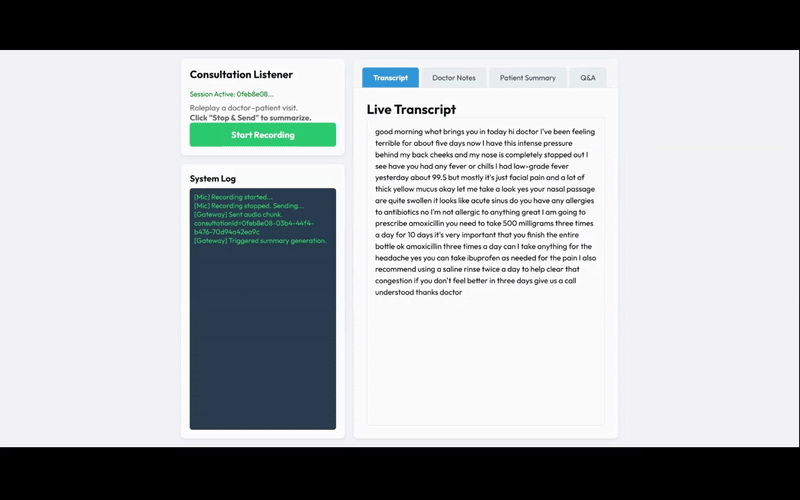
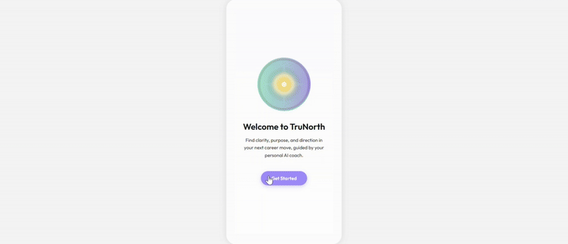
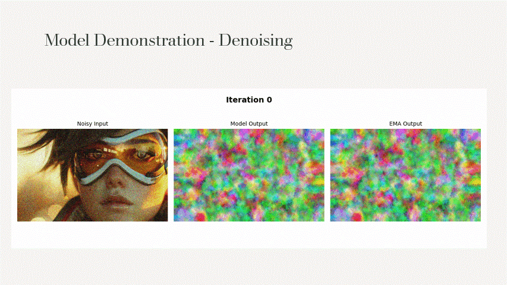
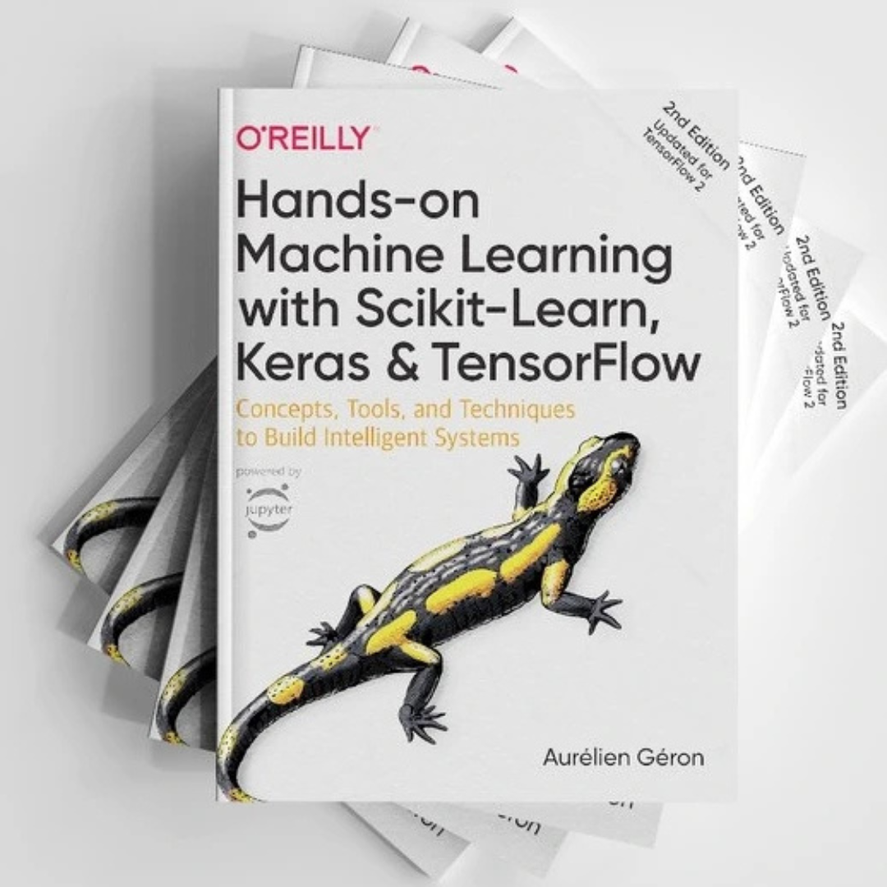
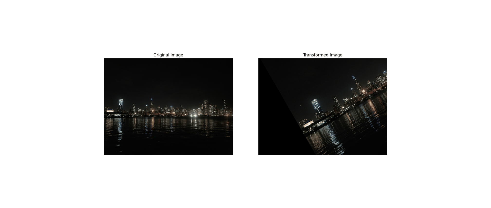

AI Consultation Listener (Multi-Agent Voice System)
Engineered a voice-native multi-agent system that reduces the doctor–patient communication gap by orchestrating 5 specialized agents for live transcription, structured clinical extraction, and dual-view summaries (SOAP-style clinician note + plain-language patient instructions). Built the backend in FastAPI with Azure OpenAI (Whisper, GPT-4) and implemented a grounded Q&A agent that answers only from the extracted consultation JSON to minimize medical hallucinations. Awarded 2nd Place at the StarPlan Multi-Agent Systems Hackathon for delivering a scalable prototype that automates documentation while improving patient understanding post-visit.
Multi-Agent SystemsFastAPIAzure OpenAIWhisperGPT-4
Code

TruNorth – GenAI Powered Career Coach
Built an end-to-end AI career coaching web app as founding AI engineer, using FastAPI, Azure OpenAI (GPT-4/4o), LangChain, LangGraph, and Pinecone for RAG-based reasoning, job retrieval, and AI confidence scoring. Designed and implemented real-time AI chat over WebSockets with a React/Vite frontend, Firebase Auth, and a PostgreSQL-backed journey engine to handle onboarding, questionnaires, progress tracking, and personalized recommendations. Integrated Whisper-based speech-to-text and TTS so users can talk to the coach via voice, creating a low-latency, production-ready experience deployed on Vercel (frontend) and Render (backend).
GenAIRAGLangChainLangGraphFastAPIReactPinecone
Live

Deep Image Prior For Image Restoration
Eliminated the necessity of large training datasets for image restoration systems by utilizing Deep Image Prior (DIP) to perform denoising, text inpainting, hole filling, and image reconstruction tasks. Implemented optimization-based training of convolutional neural networks (CNNs) on single corrupted images, overcoming real-world issues such as scarcity of clean ground truth data. Achieved a SSIM score of 0.939, showing strong high-quality restoration performance which is critical to domains such as medical imaging, satellite restoration, or historical document repair.
Computer VisionPyTorchDeep LearningCNNsImage Restoration
Repo / Paper

Machine Learning A-Z: Hands-On Python & Data Science
Hands-on implementation of core and advanced machine learning concepts including regression, classification, clustering, association rules, reinforcement learning (UCB, Thompson Sampling, Q-learning), NLP pipelines, ANN/CNN architectures, PCA/LDA, and boosting techniques (XGBoost, CatBoost). Includes complete Python code, handwritten notes, and real-world dataset experiments.
Machine LearningDeep LearningNLPReinforcement LearningPython
Code

CS512 – Computer Vision
Practical implementation of core Computer Vision concepts including matrix operations, geometric transformations, filtering, edge detection, robust estimation, and deep learning models (CNNs, VGG/ResNet, U-Net, YOLOv3, ViT). Fine-tuned and trained models on real datasets like CIFAR-10 and Oxford-IIIT Pet using Python, OpenCV, and TensorFlow.
Computer VisionDeep LearningOpenCVTensorFlowYOLOTransformers
Code